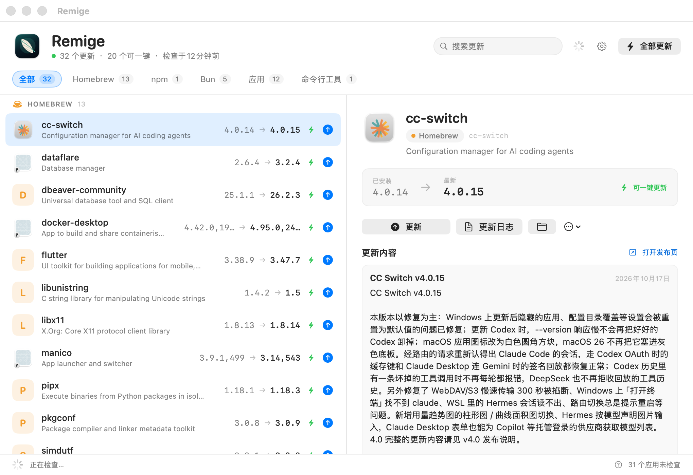
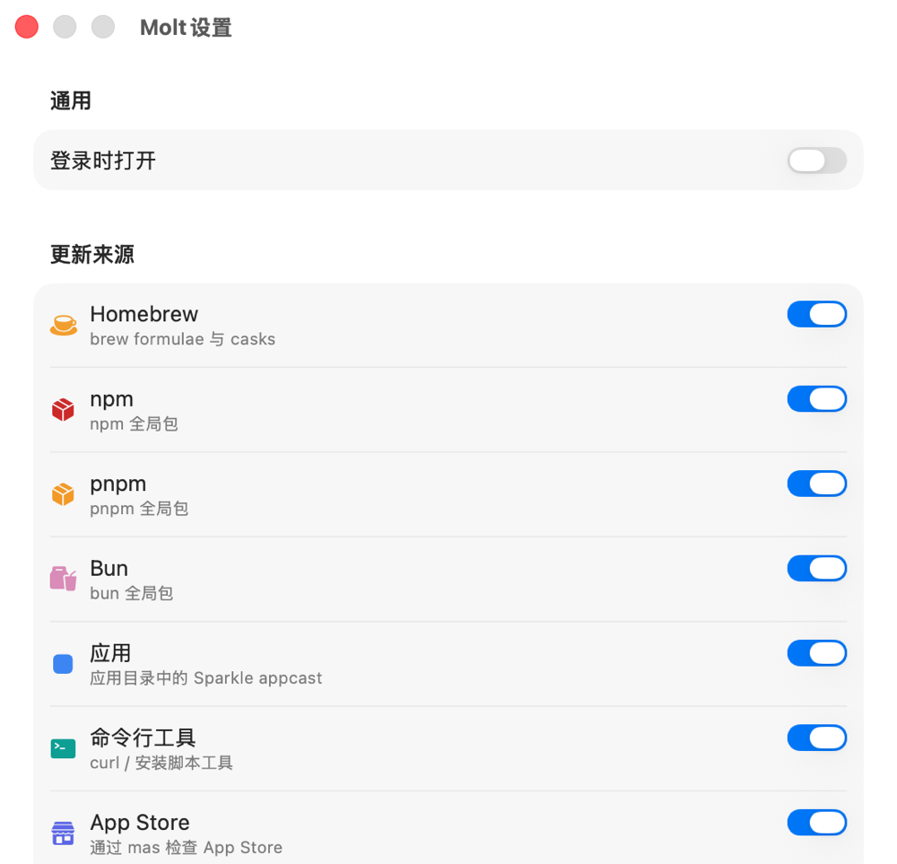

↻
Native, not another Electron app
A SwiftUI window and menu-bar item, with the same core as the CLI. Small binary, fast launch, no web runtime.
Molt finds outdated software across Homebrew, global npm, pnpm, Bun, Sparkle-updated DMG apps, the Mac App Store, and the command-line tools you installed with curl. Read the release notes. Update in one click.
curl -fsSL https://molt-site-five.vercel.app/install.sh | sh

Updaters are fragmented. Molt runs the native sources in parallel, deduplicates what it finds, and gives you one list with a safe update plan per row.
A SwiftUI window and menu-bar item, with the same core as the CLI. Small binary, fast launch, no web runtime.
Homebrew, npm, pnpm, Bun and mas run their own upgrade commands. Download-only apps open the exact full release file — never a silent bundle replacement.
GitHub release notes and Sparkle appcast notes are fetched and cached, so you can see what changed before you click update.
molt list --json, molt upgrade --all --dry-run, molt changelog iina. Stable IDs and machine-readable output for scripts.
No account, no analytics, no gateway. The last scan is cached for an instant first paint; a failure in one source never blanks the list.
Declare a curl-installed tool with a version command, a GitHub repo and an optional self-update command. Molt does the rest.
If a manager is not installed, its source is skipped automatically.
Formulae and casks, including --greedy auto-updating casks and pinned packages.
Global packages only, with the registry as the source of truth.
Reads real SUFeedURL appcasts. Honours channels and minimum macOS, ignores delta-only payloads.
When mas is installed, App Store updates join the same list.
A curated catalog for uv, Claude Code, rustup, ripgrep, gh and more — plus your own declarations.
One JSON file. Version command, latest-version source, optional upgrade argv.
Apps without a Sparkle feed, Homebrew cask, or explicit bundle-ID catalog entry are not guessed. Cataloged apps such as Magpie use official releases; unmanaged apps open the release page.
The app and the CLI share every detector, cache and upgrade plan. JSON output is stable; upgrade commands are shown before they run.
$ molt list molt 0.2.0 · just now HOMEBREW cc-switch 4.0.14 → 4.0.15 auto sqlite 3.54.0 → 3.54.1 auto NPM npm 11.20.0 → 12.2.0 auto APPS IINA 1.4.4 → 1.5.0 open 22 updates · 19 one-click · scanned in 0.8s

macOS 14 Sonoma or newer. Apple Silicon and Intel are both in the universal build.
Releases are built and checksummed on GitHub Actions. Developer ID signing and Apple notarization are wired into the release pipeline but require an Apple Developer Program membership; until those credentials are provided, macOS may show a Gatekeeper prompt. The installer clears the quarantine flag for you.
No. It runs the package manager's own upgrade command and shows the exact argv first in the CLI. Sparkle apps that are not cask-managed open the full download; Molt never replaces an app bundle behind your back.
No account. Molt never injects sudo. If a Homebrew cask or mas needs elevation, the tool reports its own error. Everything runs as your user.
Cataloged apps such as Magpie are matched by bundle ID and checked against their official GitHub releases. Other apps can use a custom tool entry if they expose a version command and a GitHub repo or latest-version URL. Homebrew-managed apps are covered by the cask source.
No analytics, no accounts, no background daemon. Network requests go only to the package managers, registries, appcast feeds and GitHub release pages needed for the scan.